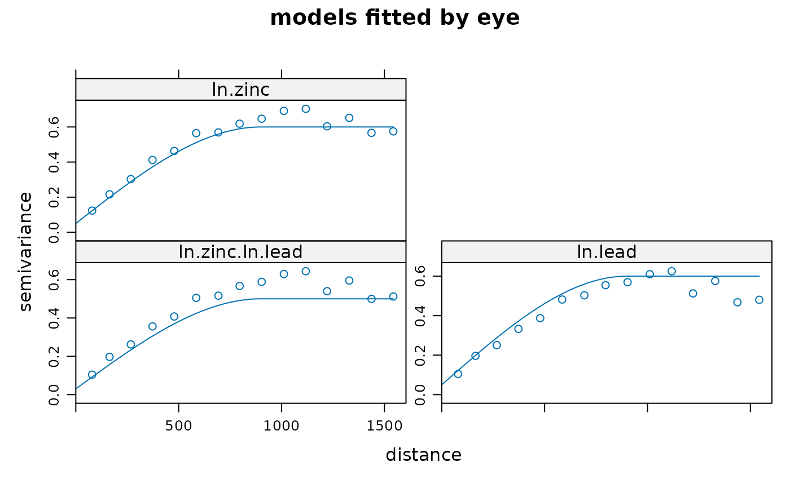
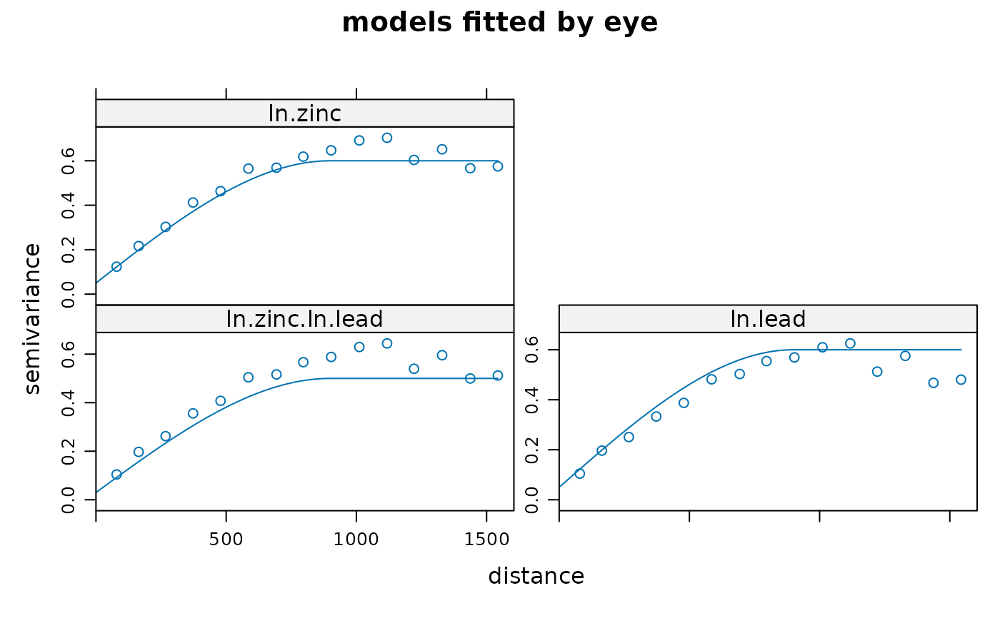

Create gstat objects, or subset it
gstat.RdFunction that creates gstat objects; objects that hold all the information necessary for univariate or multivariate geostatistical prediction (simple, ordinary or universal (co)kriging), or its conditional or unconditional Gaussian or indicator simulation equivalents. Multivariate gstat object can be subsetted.
Usage
gstat(g, id, formula, locations, data, model = NULL, beta,
nmax = Inf, nmin = 0, omax = 0, maxdist = Inf, force = FALSE,
dummy = FALSE, set, fill.all = FALSE,
fill.cross = TRUE, variance = "identity", weights = NULL, merge,
degree = 0, vdist = FALSE, lambda = 1.0)
# S3 method for gstat
print(x, ...)Arguments
- g
gstat object to append to; if missing, a new gstat object is created
- id
identifier of new variable; if missing,
varnis used withnthe number for this variable. If a cross variogram is entered,idshould be a vector with the twoidvalues , e.g.c("zn", "cd"), further only supplying argumentsgandmodel. It is advisable not to use expressions, such aslog(zinc), as identifiers, as this may lead to complications later on.- formula
formula that defines the dependent variable as a linear model of independent variables; suppose the dependent variable has name
z, for ordinary and simple kriging use the formulaz~1; for simple kriging also definebeta(see below); for universal kriging, supposezis linearly dependent onxandy, use the formulaz~x+y- locations
formula with only independent variables that define the spatial data locations (coordinates), e.g.
~x+y; ifdatahas acoordinatesmethod to extract its coordinates this argument can be ignored (see package sp for classes for point or grid data).- data
data frame; contains the dependent variable, independent variables, and locations.
- model
variogram model for this
id; defined by a call to vgm; see argumentidto see how cross variograms are entered- beta
for simple kriging (and simulation based on simple kriging): vector with the trend coefficients (including intercept); if no independent variables are defined the model only contains an intercept and this should be the expected value; for cross variogram computations: mean parameters to be used instead of the OLS estimates
- nmax
for local kriging: the number of nearest observations that should be used for a kriging prediction or simulation, where nearest is defined in terms of the space of the spatial locations
- nmin
for local kriging: if the number of nearest observations within distance
maxdistis less thannmin, a missing value will be generated, unlessforce==TRUE; seemaxdist- omax
maximum number of observations to select per octant (3D) or quadrant (2D); only relevant if
maxdisthas been defined as well- maxdist
for local kriging: only observations within a distance of
maxdistfrom the prediction location are used for prediction or simulation; if combined withnmax, both criteria apply- force
for local kriging, force neighbourhood selection: in case
nminis given, search beyondmaxdistuntilnminneighbours are found. A missing value is returned if this is not possible.- dummy
logical; if TRUE, consider this data as a dummy variable (only necessary for unconditional simulation)
- set
named list with optional parameters to be passed to gstat (only
setcommands of gstat are allowed, and not all of them may be relevant; see the manual for gstat stand-alone, URL below )- x
gstat object to print
- fill.all
logical; if TRUE, fill all of the direct variogram and, depending on the value of
fill.crossalso all cross variogram model slots ingwith the given variogram model- fill.cross
logical; if TRUE, fill all of the cross variograms, if FALSE fill only all direct variogram model slots in
gwith the given variogram model (only iffill.allis used)- variance
character; variance function to transform to non-stationary covariances; "identity" does not transform, other options are "mu" (Poisson) and "mu(1-mu)" (binomial)
- weights
numeric vector; if present, covariates are present, and variograms are missing weights are passed to OLS prediction routines resulting in WLS; if variograms are given, weights should be 1/variance, where variance specifies location-specific measurement error; see references section below
- merge
either character vector of length 2, indicating two ids that share a common mean; the more general gstat merging of any two coefficients across variables is obtained when a list is passed, with each element a character vector of length 4, in the form
c("id1", 1,"id2", 2). This merges the first parameter for variableid1to the second of variableid2.- degree
order of trend surface in the location, between 0 and 3
- vdist
logical; if TRUE, instead of Euclidian distance variogram distance is used for selecting the nmax nearest neighbours, after observations within distance maxdist (Euclidian/geographic) have been pre-selected
- lambda
test feature; doesn't do anything (yet)
- ...
arguments that are passed to the printing of variogram models only
Value
an object of class gstat, which inherits from list.
Its components are:
- data
list; each element is a list with the
formula,locations,data,nvars,beta, etc., for a variable- model
list; each element contains a variogram model; names are those of the elements of
data; cross variograms have names of the pairs of data elements, separated by a.(e.g.:var1.var2
)
- set
list; named list, corresponding to set
name=value; gstat commands (look up the set command in the gstat manual for a full list)
References
http://www.gstat.org/ Pebesma, E.J., 2004. Multivariable geostatistics in S: the gstat package. Computers and Geosciences, 30: 683-691.
for kriging with known, varying measurement errors (weights), see e.g.
Delhomme, J.P. Kriging in the hydrosciences. Advances in Water
Resources, 1(5):251-266, 1978; see also the section Kriging with known
measurement errors in the gstat user's manual, http://www.gstat.org/
Note
The function currently copies the data objects into the gstat object, so this may become a large object. I would like to copy only the name of the data frame, but could not get this to work. Any help is appreciated.
Subsetting (see examples) is done using the id's of the variables,
or using numeric subsets. Subsetted gstat objects only contain cross
variograms if (i) the original gstat object contained them and (ii) the
order of the subset indexes increases, numerically, or given the order
they have in the gstat object.
The merge item may seem obscure. Still, for colocated cokriging, it is
needed. See texts by Goovaerts, Wackernagel, Chiles and Delfiner, or
look for standardised ordinary kriging in the 1992 Deutsch and Journel
or Isaaks and Srivastava. In these cases, two variables share a common
mean parameter. Gstat generalises this case: any two variables may share
any of the regression coefficients; allowing for instance analysis of
covariance models, when variograms were left out (see e.g. R. Christensen's
``Plane answers'' book on linear models). The tests directory of the
package contains examples in file merge.R. There is also demo(pcb)
which merges slopes across years, but with year-dependent intercept.
Examples
library(sp)
data(meuse)
coordinates(meuse) = ~x+y
# let's do some manual fitting of two direct variograms and a cross variogram
g <- gstat(id = "ln.zinc", formula = log(zinc)~1, data = meuse)
g <- gstat(g, id = "ln.lead", formula = log(lead)~1, data = meuse)
# examine variograms and cross variogram:
plot(variogram(g))
 # enter direct variograms:
g <- gstat(g, id = "ln.zinc", model = vgm(.55, "Sph", 900, .05))
g <- gstat(g, id = "ln.lead", model = vgm(.55, "Sph", 900, .05))
# enter cross variogram:
g <- gstat(g, id = c("ln.zinc", "ln.lead"), model = vgm(.47, "Sph", 900, .03))
# examine fit:
plot(variogram(g), model = g$model, main = "models fitted by eye")

# see also demo(cokriging) for a more efficient approach
g["ln.zinc"]
#> data:
#> ln.zinc : formula = log(zinc)`~`1 ; data dim = 155 x 12
#> variograms:
#> model psill range
#> ln.zinc[1] Nug 0.05 0
#> ln.zinc[2] Sph 0.55 900
g["ln.lead"]
#> data:
#> ln.lead : formula = log(lead)`~`1 ; data dim = 155 x 12
#> variograms:
#> model psill range
#> ln.lead[1] Nug 0.05 0
#> ln.lead[2] Sph 0.55 900
g[c("ln.zinc", "ln.lead")]
#> data:
#> ln.zinc : formula = log(zinc)`~`1 ; data dim = 155 x 12
#> ln.lead : formula = log(lead)`~`1 ; data dim = 155 x 12
#> variograms:
#> model psill range
#> ln.zinc[1] Nug 0.05 0
#> ln.zinc[2] Sph 0.55 900
#> ln.lead[1] Nug 0.05 0
#> ln.lead[2] Sph 0.55 900
#> ln.zinc.ln.lead[1] Nug 0.03 0
#> ln.zinc.ln.lead[2] Sph 0.47 900
g[1]
#> data:
#> ln.zinc : formula = log(zinc)`~`1 ; data dim = 155 x 12
#> variograms:
#> model psill range
#> ln.zinc[1] Nug 0.05 0
#> ln.zinc[2] Sph 0.55 900
g[2]
#> data:
#> ln.lead : formula = log(lead)`~`1 ; data dim = 155 x 12
#> variograms:
#> model psill range
#> ln.lead[1] Nug 0.05 0
#> ln.lead[2] Sph 0.55 900
# Inverse distance interpolation with inverse distance power set to .5:
# (kriging variants need a variogram model to be specified)
data(meuse.grid)
gridded(meuse.grid) = ~x+y
meuse.gstat <- gstat(id = "zinc", formula = zinc ~ 1, data = meuse,
nmax = 7, set = list(idp = .5))
meuse.gstat
#> data:
#> zinc : formula = zinc`~`1 ; data dim = 155 x 12 nmax = 7
#> set idp = 0.5;
z <- predict(meuse.gstat, meuse.grid)
#> [inverse distance weighted interpolation]
spplot(z["zinc.pred"])
# enter direct variograms:
g <- gstat(g, id = "ln.zinc", model = vgm(.55, "Sph", 900, .05))
g <- gstat(g, id = "ln.lead", model = vgm(.55, "Sph", 900, .05))
# enter cross variogram:
g <- gstat(g, id = c("ln.zinc", "ln.lead"), model = vgm(.47, "Sph", 900, .03))
# examine fit:
plot(variogram(g), model = g$model, main = "models fitted by eye")

# see also demo(cokriging) for a more efficient approach
g["ln.zinc"]
#> data:
#> ln.zinc : formula = log(zinc)`~`1 ; data dim = 155 x 12
#> variograms:
#> model psill range
#> ln.zinc[1] Nug 0.05 0
#> ln.zinc[2] Sph 0.55 900
g["ln.lead"]
#> data:
#> ln.lead : formula = log(lead)`~`1 ; data dim = 155 x 12
#> variograms:
#> model psill range
#> ln.lead[1] Nug 0.05 0
#> ln.lead[2] Sph 0.55 900
g[c("ln.zinc", "ln.lead")]
#> data:
#> ln.zinc : formula = log(zinc)`~`1 ; data dim = 155 x 12
#> ln.lead : formula = log(lead)`~`1 ; data dim = 155 x 12
#> variograms:
#> model psill range
#> ln.zinc[1] Nug 0.05 0
#> ln.zinc[2] Sph 0.55 900
#> ln.lead[1] Nug 0.05 0
#> ln.lead[2] Sph 0.55 900
#> ln.zinc.ln.lead[1] Nug 0.03 0
#> ln.zinc.ln.lead[2] Sph 0.47 900
g[1]
#> data:
#> ln.zinc : formula = log(zinc)`~`1 ; data dim = 155 x 12
#> variograms:
#> model psill range
#> ln.zinc[1] Nug 0.05 0
#> ln.zinc[2] Sph 0.55 900
g[2]
#> data:
#> ln.lead : formula = log(lead)`~`1 ; data dim = 155 x 12
#> variograms:
#> model psill range
#> ln.lead[1] Nug 0.05 0
#> ln.lead[2] Sph 0.55 900
# Inverse distance interpolation with inverse distance power set to .5:
# (kriging variants need a variogram model to be specified)
data(meuse.grid)
gridded(meuse.grid) = ~x+y
meuse.gstat <- gstat(id = "zinc", formula = zinc ~ 1, data = meuse,
nmax = 7, set = list(idp = .5))
meuse.gstat
#> data:
#> zinc : formula = zinc`~`1 ; data dim = 155 x 12 nmax = 7
#> set idp = 0.5;
z <- predict(meuse.gstat, meuse.grid)
#> [inverse distance weighted interpolation]
spplot(z["zinc.pred"])
 # see demo(cokriging) and demo(examples) for further examples,
# and the manuals for predict and image
# local universal kriging
gmeuse <- gstat(id = "log_zinc", formula = log(zinc)~sqrt(dist), data = meuse)
# variogram of residuals
vmeuse.res <- fit.variogram(variogram(gmeuse), vgm(1, "Exp", 300, 1))
# prediction from local neighbourhoods within radius of 170 m or at least 10 points
gmeuse <- gstat(id = "log_zinc", formula = log(zinc)~sqrt(dist),
data = meuse, maxdist=170, nmin=10, force=TRUE, model=vmeuse.res)
predmeuse <- predict(gmeuse, meuse.grid)
#> [using universal kriging]
spplot(predmeuse)
# see demo(cokriging) and demo(examples) for further examples,
# and the manuals for predict and image
# local universal kriging
gmeuse <- gstat(id = "log_zinc", formula = log(zinc)~sqrt(dist), data = meuse)
# variogram of residuals
vmeuse.res <- fit.variogram(variogram(gmeuse), vgm(1, "Exp", 300, 1))
# prediction from local neighbourhoods within radius of 170 m or at least 10 points
gmeuse <- gstat(id = "log_zinc", formula = log(zinc)~sqrt(dist),
data = meuse, maxdist=170, nmin=10, force=TRUE, model=vmeuse.res)
predmeuse <- predict(gmeuse, meuse.grid)
#> [using universal kriging]
spplot(predmeuse)